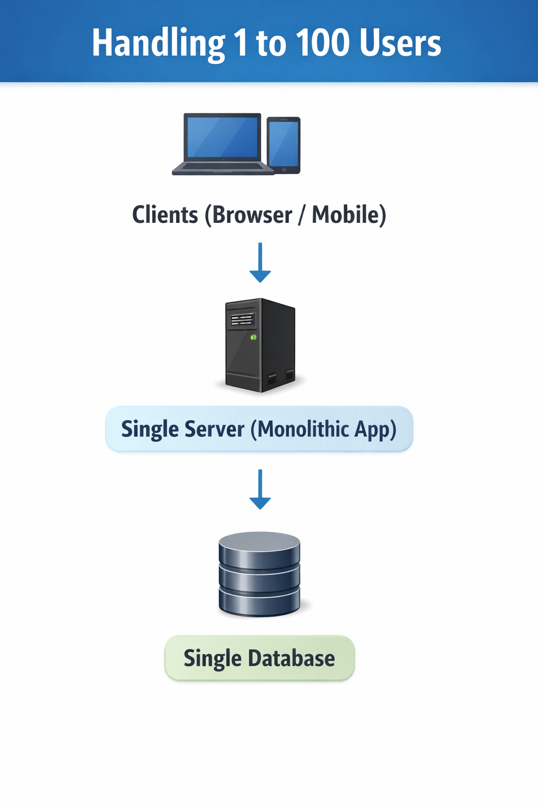
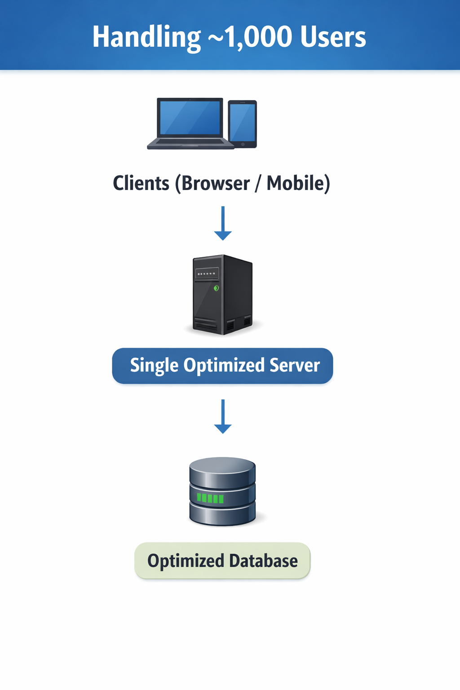
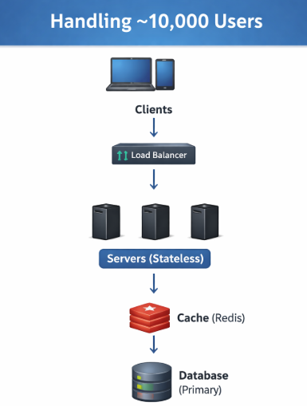
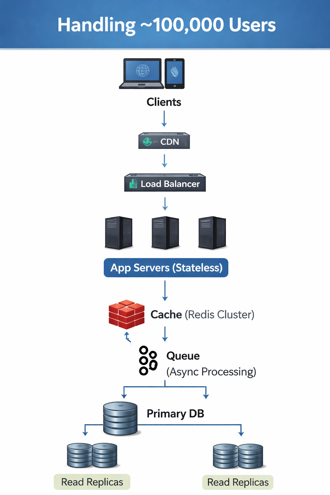
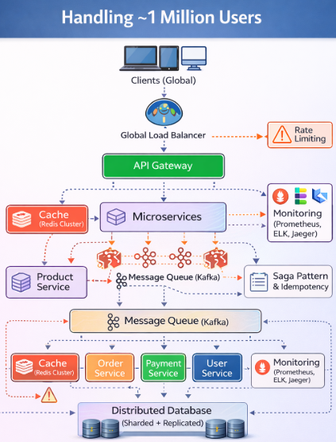
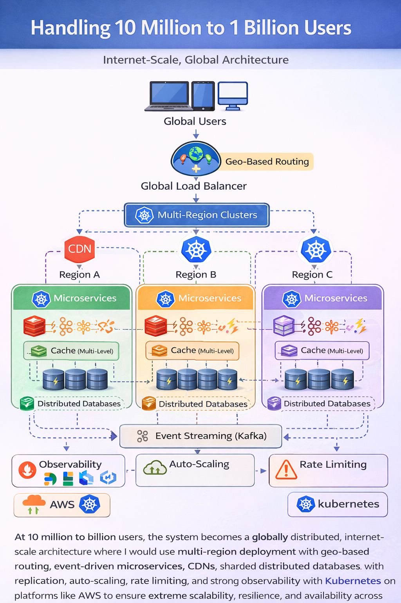

System Design Mastery
Master scalable systems with premium insights
📈 Scale from 100 Users to 10 Million+ Users
👉 Interviewer asks:
Design a
system that scales from 100 users to 10 million+ users.
Explain how your architecture
evolves at each stage, what breaks as you scale, how you fix it, and what trade-offs each
solution introduces.
🟢 Phase 1: ~100 Users (Very Small Scale)
🎯 Goal:
Just make it work correctly. No need to overthink.
💥 Problems:
Almost none
🤔 Why? Traffic is too low to expose real bottlenecks
🧠 Concepts Needed:
- Basic client-server architecture
- Simple database (SQL or NoSQL)
- Monolithic backend (Single server)
- Basic REST APIs
🏗️ High-Level Design:
Client → Single Server → Database

🏗️ Client → Single Server → Database
✅ What you use:
- One backend server (Node.js [Express] / Spring Boot)
- One DB (MySQL / PostgreSQL)
- No caching, no load balancer
❌ Avoid:
- Load balancer ❌
- Rate limiting ❌
- Microservices ❌
⚠️ Hidden Risk:
Bad schema design now = big pain later
👉 Interview Insight:
At this scale, simplicity > scalability.
💬 One Line:
At 100 users scale, I would keep the system simple.
I'll use a monolithic backend deployed on a single server with a single database.
This is sufficient because concurrency is low and avoids unnecessary complexity.
I'll include basic authentication, logging, and error handling to ensure reliability.
I would avoid distributed systems, load balancers, or caching since they are not needed at this scale.
🟡 Phase 2: ~1,000 Users (Small Scale)
At 1,000 users, I would still keep the architecture simple but optimize performance.
🎯 Goal:
Handle moderate traffic, avoid single point bottlenecks.
💥 Problems:
- DB Connection Limits — The number of connections a database can accommodate depends on the DB engine
- Slow queries under concurrent requests
- CPU spikes — temporary increases in processor usage
🤔
Why?
Each request opens a DB connection.
DB has limited connections (~100 in PostgreSQL)
🧠 Concepts Needed:
- Vertical scaling — increase server power such as CPU, RAM
- Basic indexing in DB — A data structure that improves query speed
- Query Optimization — Avoid SELECT *, Use proper joins, Limit results
- Connection pooling
🔌 What is Connection Pooling?
- Reusing DB connections instead of creating new ones per request
- Keeping an active connection and running the query in a loop
✅ Why
critical?
DB connection creation is expensive so use connection pooling
🏗️ High-Level Design:
Client → Single Server (Vertically Scaled) → Single Database (Optimized)

🏗️ Client → Single Server (Vertically Scaled) → Single Database (Optimized)
❌ Still avoid:
- Load balancer (not needed yet)
- Distributed systems
⚠️ New Problems Introduced:
Connection pool mismanagement:
- Connection Timeouts
- Connection Leaks
- Deadlocks
- Pool Sizing
👉 Interview Insight:
Optimize before you distribute.
💬 One Line:
At around 1,000 users, I would still keep the architecture simple and focus on optimizing a single server setup.
I would use vertical scaling to increase server capacity and optimize the database using indexing, query tuning, and connection pooling.
This helps handle moderate concurrency efficiently.
However, I would monitor system metrics, and if I observe bottlenecks like CPU saturation or increased latency, I would then introduce horizontal scaling using a load balancer.
🟠 Phase 3: ~10,000 Users (Growing System)
At this point, the system starts facing concurrency and latency issues.
🎯 Goal:
Handle concurrent users and reduce latency.
💥 Problems:
- High response time
- Repeated DB hits (Same data fetched again and again)
- Server overload — Single server cannot handle traffic
🤔
Why?
Same data fetched again and again.
DB becomes bottleneck
🧠 Concepts Needed:
- Horizontal scaling begins — Adding multiple servers instead of upgrading one
- Caching Layer (like Redis) — In-memory data store used to cache frequently accessed data
- Basic load balancing — Distributes incoming traffic across multiple servers
- Stateless servers — not store client session data on the server. Every request is independent and the server does not remember anything about previous requests. Which is good for scale in future
🏗️ High-Level Design:
Client → LB → [Server 1, Server 2, Server 3] → Cache → DB

🏗️ Client → LB → [Server 1, Server 2, Server 3] → Cache → DB
⚠️ New Problems:
Cache invalidation — Users update profile → stale data everywhere
✅ Fix:
- Caching Strategies — Cache-aside pattern
- Cache Eviction Policies — TTL (time-to-live) — Data expires after certain time
💬 One Line:
At around 10,000 users, the system starts facing concurrency and latency issues.
A single server becomes insufficient, so I would introduce horizontal scaling with multiple stateless servers behind a load balancer.
To reduce database load and improve response time, I would add a caching layer like Redis using a cache-aside strategy.
This setup ensures scalability while keeping the system manageable.
🔵 Phase 4: ~100,000 Users (1 Lakh)
At this scale, the database becomes the main bottleneck.
🎯 Goal:
Scale reads & writes efficiently.
Split reads (replicas) + split writes (Primary Database).
💥 Problems:
- Write contention — Too many writes hitting single DB
- Latency Increases — Global users, large data
🤔
Why?
Too many writes hitting single DB.
Data size grows → slower queries
🧠 Concepts Needed:
- Read Replicas — Copies of database used for read queries which separate reads/writes
- CDN — Content Delivery Network stores static content closer to users
- Rate limiting — Limit number of requests per user/IP
- Async writes — Move heavy operations to background which use: Queues (Kafka / RabbitMQ)
🏗️ High-Level Design:
Clients → CDN → Load Balancer → Multiple App Servers → Cache → Queue → DB Layer (Primary + Read Replicas)

🏗️ Clients → CDN → Load Balancer → Multiple App Servers → Cache → Queue → DB Layer (Primary + Read Replicas)
⚠️ New Problems:
- Eventual consistency — Data may not be instantly consistent across systems. ✔ Happens due to replicas + async
- Replication lag — delay between a data update on a primary node and the time it takes for that update to be reflected on replica nodes
👉 Interview Insight:
Database becomes the bottleneck here.
💬 One Line:
At around 100,000 users, the database becomes the primary bottleneck, especially for write operations.
To handle this, I would introduce database scaling strategies such as read replicas for read traffic.
I would also use a CDN to serve static content and reduce latency for global users.
Additionally, I would use a distributed caching layer like Redis and introduce asynchronous processing using queues to offload heavy tasks.
Rate limiting would also be important to protect the system.
This design ensures scalability, performance, and fault tolerance at higher scale.
🔴 Phase 5: ~1 Million Users = 10 Lakh users (Large Scale)
Break the system into independent services to scale and deploy them separately.
🎯 Goal:
Highly scalable & fault-tolerant system
💥 Problems:
- Single DB still bottleneck
- Large tables (slow queries)
- Tight coupling in monolith
- Deployment slow & risky
🤔
Why?
System not designed for independent scaling
🧠 Concepts Needed:
- Microservices architecture — Break system into smaller independent services and does Independent scaling
- Database Scaling — Sharding — Splitting database into multiple smaller databases
- Distributed systems
- Async processing
- Load balancers
- CDN
- Rate Limiting
- Saga pattern — If something fails → compensating actions (rollback steps) are triggered
- Idempotency — Performing it multiple times produces the same result as performing it once
- Circuit breaker — Stops calling a failing service temporarily to prevent system overload
- Message queues — It enables asynchronous communication between services, improving scalability
🏗️ High-Level Design:
Microservices with Sharding, Message Queues, and Circuit Breakers

🏗️ Microservices with Sharding, Message Queues, and Circuit Breakers
✅ Add:
- Microservices
- DB sharding
- Message queues (like Apache Kafka)
- Saga pattern + idempotency
- Circuit breaker
⚠️ Now you must handle:
- Failures
- Data consistency
- Monitoring
👉 Interview Insight:
System design becomes distributed systems.
💬 One Line:
At around 1 million users, the system transitions into a distributed architecture where a monolith is no longer sufficient, and services need to be broken into independent microservices for better scalability and fault isolation.
To handle massive read and write loads, I would introduce database sharding along with replication.
I would also use a CDN to reduce latency for global users and a distributed caching layer like Redis to minimize database load.
Additionally, I would implement asynchronous processing using message queues like Apache Kafka to decouple services and handle spikes efficiently.
To ensure reliability, I would incorporate patterns like saga for distributed transactions, idempotency to avoid duplicate operations, and circuit breakers to prevent cascading failures, along with rate limiting to protect the system.
This design ensures high scalability, resilience, and availability at large scale.
🟣 Phase 6: 10 Million+ Users (1 crore) to 1000 Million Users (100 crore) - (Internet Scale)
At this level, the system needs to be globally distributed and fault tolerant.
Now you’re running an internet-scale system
🎯 Goal:
Extreme scalability + high availability.
💥 Problems:
- Hotspots — Some data gets extreme traffic (e.g., trending video, celebrity profile)
- Regional outages — entire data center down
- Hot keys — same data requested heavily
- Traffic spikes — flash sales, bookings
🤔
Why?
Uneven traffic distribution.
System is globally distributed.
Shared
dependencies
failing
🧠 Concepts Needed:
- CDN
- Rate Limiting
- Load Balancers
- Replication + Redundancy — For disaster recovery
- Data partitioning + Data Sharding
- Advanced Caching — CDN cache, Service-level cache, Regional cache
- Multi-region deployment — Deploying your system in multiple geographic regions (different data centers across the world)
- Geo-based routing — Routing user requests to the closest or best-performing region
- Event-driven architecture — All services communicate via events
- Advanced observability — monitoring, logging, tracing
- Container orchestration (like Kubernetes)
🏗️ High-Level Design:
Global Multi-Region Architecture with Kubernetes

🏗️ Global Multi-Region Architecture with Kubernetes
✅ Add:
- Multi-region deployment
- Geo-based routing
- Event-driven architecture
- Circuit breakers
- Auto-scaling
- Observability
- Container orchestration (like Kubernetes)
👉 Example tools:
- Amazon Web Services
- Kubernetes
⚠️ New Problems:
- Debugging becomes extremely hard
- Data consistency vs availability trade-offs
👉 Interview Insight:
Now you're designing like Google / Netflix.
💬 One Line:
At 10 million to billion users, the system evolves into a globally distributed, internet-scale architecture where applications are deployed across multiple regions to ensure high availability and fault tolerance.
To handle massive and uneven traffic, I would use geo-based routing to direct users to the nearest or healthiest region, along with global load balancing.
I would leverage CDNs and multi-level caching (CDN, regional, and service-level) to reduce latency and minimize backend load.
Additionally, I would use data partitioning and sharding with replication to handle large-scale data efficiently and ensure disaster recovery.
Event-driven architecture would be used for asynchronous communication between services to handle spikes and improve scalability.
To maintain reliability, I would implement rate limiting, circuit breakers, and auto-scaling mechanisms.
Finally, strong observability with monitoring, logging, and tracing, along with container orchestration tools like Kubernetes on platforms like Amazon Web Services, ensures system stability and efficient operations at global scale.
This design enables extreme scalability, resilience, and high availability across regions.
📋 Scalability Evolution Summary
| Phase | Users | Key Addition |
|---|---|---|
| 🟢 1 | 100 | Simple database + Monolithic backend + Simple Client Server Architecture |
| 🟡 2 | 1K | Vertical Scaling + Connection Pooling + Basic Indexing |
| 🟠 3 | 10K | Horizontal scaling + Load Balancer + Caching + Stateless servers |
| 🔵 4 | 100K | Read Replicas + CDN + Async + Rate limiting |
| 🔴 5 | 1M | Microservices + Sharding + Saga pattern + idempotency + Circuit breaker + Message queues |
| 🟣 6 | 10M+ |
Multi-Region deployment + Kubernetes
+ Advanced Caching + Geo-based routing + Event-driven architecture + Data partitioning + Data Sharding + Replication + Redundancy |
🏆 Golden Rule
"Good system design is not about adding everything — it's about adding the right things at the right scale."
Scale is not about handling more users. It's about handling new kinds of failures.
🧠 Interview Tips
- Start simple — Don't over-engineer early phases
- Show progression — Clear evolution at each scale
- Discuss bottlenecks — What breaks at each phase?
- Quantify decisions — Why 4 servers vs 10?
- Consider costs — Not just technical feasibility